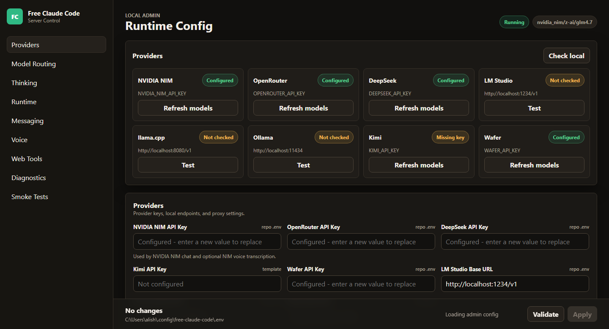
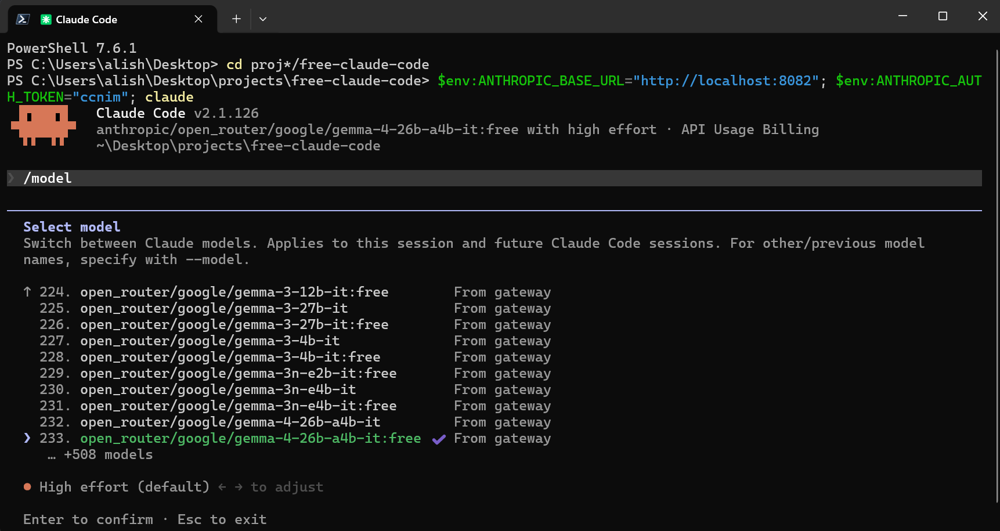

Free Claude Code: 9 Coding Agents, 50 Providers, Zero Subscription
free-claude-code (FCC) from Alishahryar1 is sitting at ~49K stars, and the pitch is simple: run Claude Code — plus Codex, Pi, OpenCode, Cline, Hermes, DeepSeek Harness, Grok Build, and Muse Code — against a pool of 50 free-tier providers totaling over 1.3 billion free tokens per month. It's an independent open-source project (MIT), explicitly not affiliated with Anthropic.
The differentiator versus the sketchy "free Claude" proxies you've seen before: FCC describes itself as ToS-friendly. It follows provider terms, drops integrations when they stop being allowed, and routes between free, paid, subscription, and fully local models (LM Studio, llama.cpp, Ollama) from one searchable admin UI. Honestly, that last part is underrated — your coding agent keeps working when a provider has an outage, because after retries are exhausted FCC automatically falls back to your next configured model without restarting the turn.

Why you'd actually use it
- You want agentic coding without another subscription. Point Claude Code at NVIDIA NIM or other free tiers and get real agent sessions on someone else's token budget.
- You're tired of outages killing mid-task. Automatic model fallback means a dead provider doesn't strand you halfway through a refactor — FCC moves to your next configured model mid-turn.
- You have local models gathering dust. FCC catalogs LM Studio, llama.cpp, and Ollama models alongside cloud providers, so one config serves both privacy-sensitive work and heavy lifting.
- You want your agent in more places than the terminal. Clients include VS Code, JetBrains, the Codex App, Discord, and Telegram — plus voice notes via local Whisper or NVIDIA NIM transcription.
- You burn tokens on terminal noise. Optional RTK integration filters common command output, and FCC claims up to 90% fewer terminal-output tokens via five no-provider optimizations (quota probes, titles, suggestions, etc.).
Getting started
- Install (or update later by re-running the same command). When prompted, pick at least one coding agent, optionally RTK:
# macOS / Linux curl -fsSL "https://raw.githubusercontent.com/Alishahryar1/free-claude-code/main/scripts/install.sh" | sh # Windows PowerShell & ([scriptblock]::Create((irm "https://raw.githubusercontent.com/Alishahryar1/free-claude-code/main/scripts/install.ps1"))) - Start FCC. On Windows or macOS open Free Claude Code from your desktop/Start menu/Applications folder. On Linux run:
Keep its terminal open. The Admin UI URL appears in the server log; desktop installs also give you a tray/menu-bar icon for Admin, restart, and quit.fcc-server - Configure a provider. The documented default path is NVIDIA NIM: create an API key at build.nvidia.com/settings/api-keys, paste it into
NVIDIA_NIM_API_KEYin the Admin UI, keepMODELon the default (nvidia_nim/nvidia/nemotron-3-super-120b-a12b) or search the dropdown for another model, then click Validate, then Apply.

- Run your coding agent through FCC. One launcher per harness:
fcc-claude # Claude Code fcc-codex # Codex fcc-pi # Pi fcc-opencode # OpenCode fcc-cline # Cline fcc-hermes # Hermes fcc-dsh # DeepSeek Harness Web fcc-grok # Grok Build fcc-muse # Muse Code - Pick a model from your agent's native picker — e.g.
/modelinside Claude Code shows FCC models directly. - Optional but recommended: enable Proxy Authentication in Admin so the local proxy requires a bearer token.

Code & config samples
Everyday management commands:
# check installed version without starting the server
fcc-server --version
# update = re-run your original install command
# uninstall (stops FCC first); removes FCC + ~/.fcc/,
# keeps uv, Python, and all your coding agents
curl -fsSL "https://raw.githubusercontent.com/Alishahryar1/free-claude-code/main/scripts/uninstall.sh" | shVoice input is configured in Admin UI → Messaging → Voice: enable voice notes, choose a transcription backend (cpu, cuda, or nvidia_nim), and select a Whisper model. Local gated Whisper models need HUGGINGFACE_API_KEY; NVIDIA NIM transcription needs NVIDIA_NIM_API_KEY.
What's new
Movement is fast — 968 commits and multiple merges per day as of August 24–25, 2026:
- LLM7.io added as the 50th provider (#1536), with routing for its mixed media catalog (#1540).
- A canonical protocol refactor series was merged and then reverted (#1549) — if you saw odd stream behavior over the past few days, updating should normalize it.
- "Share Chat and Responses stream execution lifecycle" (#1546) unified how OpenAI-style streams are orchestrated.
- Telegram fix: MarkdownV2 image fallbacks now escape as plain text (#1526).
Troubleshooting
- "Provider API request failed" — the project's most common issue (#342, #620). It's almost always upstream: the free provider rate-limited you, rotated something, or had an outage. Fix: switch models in the picker, re-validate the API key in Admin, and let FCC's fallback move to your next configured model. Long-running turns (1–5 minutes) hitting this mid-stream are reported in #620.
- FCC silently uses a paid model instead of a free one — reported in #241. Check the selected model in your client's picker and pin it explicitly rather than leaving "auto"; review your provider order in the Admin UI so free tiers come first.
- Admin UI unreachable after starting fcc-server on Linux — the URL prints in the server log, so scroll up; and remember the terminal must stay open. Desktop installs (Windows/macOS) expose the same UI via tray icon instead.
- Agent lost tools/streaming/thinking after install — FCC preserves native capabilities like interleaved thinking only when the routed model supports them. If your chosen free tier lacks a feature, pick a compatible model rather than assuming FCC broke.
- Local proxy exposed on your network — by default there's no auth on the local proxy. Enable Proxy Authentication in Admin immediately on shared machines.